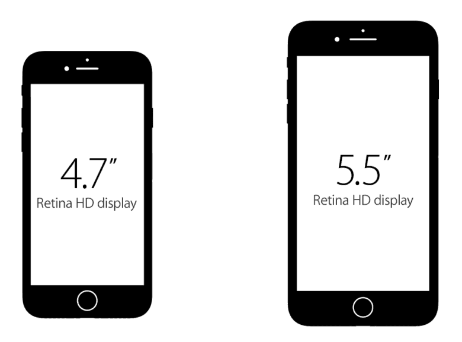

Новый Iphone7
 iPhone 7 выходит на новый уровень инноваций и точности. Уникальный цвет «чёрный оникс». Корпус с защитой от брызг и воды. Полностью переработанная кнопка «Домой» и новый цельный дизайн unibody. С первого взгляда и первого прикосновения вы понимаете, насколько он великолепен.Буквально несколько минут назад Тим Кук со сцены Bill Graham Civic Auditorium в Сан-Франциско анонсировал новые iPhone 7 и iPhone 7 Plus. Точнее как, он еще нет, но официальный твиттер Apple уже да. Как и предполагалось, особых внешних изменений, по сравнению с предыдущим поколением, не очень много, хотя они есть. Но зато в плане железа и ПО нововведений хоть отбавляй. iPhone 7 и 7 Plus получили влагозащиту по стандарту IP67. А это значит, что теперь смартфону не страшны влага и грязь. Впрочем, плавать с ним не рекомендуется. Также оба смартфона оснащены стереодинамиками.Наконец, айфоны будут защищены от влагопроникновения на 100% и можно смело не боятся, уронить айфон в воду или упасть с айфонов в кармане в бассеин. iPhone 7 защищен от влаги по стандарту IP67, что означает, что устройство можно смело не боясь погружать в воду. Больше не нужно боятся дождя. Можно даже спокойно брать с собой телефон в ванную или душ.Узнать больше...
iPhone 7 выходит на новый уровень инноваций и точности. Уникальный цвет «чёрный оникс». Корпус с защитой от брызг и воды. Полностью переработанная кнопка «Домой» и новый цельный дизайн unibody. С первого взгляда и первого прикосновения вы понимаете, насколько он великолепен.Буквально несколько минут назад Тим Кук со сцены Bill Graham Civic Auditorium в Сан-Франциско анонсировал новые iPhone 7 и iPhone 7 Plus. Точнее как, он еще нет, но официальный твиттер Apple уже да. Как и предполагалось, особых внешних изменений, по сравнению с предыдущим поколением, не очень много, хотя они есть. Но зато в плане железа и ПО нововведений хоть отбавляй. iPhone 7 и 7 Plus получили влагозащиту по стандарту IP67. А это значит, что теперь смартфону не страшны влага и грязь. Впрочем, плавать с ним не рекомендуется. Также оба смартфона оснащены стереодинамиками.Наконец, айфоны будут защищены от влагопроникновения на 100% и можно смело не боятся, уронить айфон в воду или упасть с айфонов в кармане в бассеин. iPhone 7 защищен от влаги по стандарту IP67, что означает, что устройство можно смело не боясь погружать в воду. Больше не нужно боятся дождя. Можно даже спокойно брать с собой телефон в ванную или душ.Узнать больше...
 Дисплей Retina HD. Широкоформатный дисплей с диагональю 5,5 дюйма и подсветкой LED. Multi-Touch с технологией IPS. 1920x1080 пикселей, 401 пиксель/дюйм. Контрастность 1300:1 (стандартная) Диагональ экрана iPhone 7 – 4,7 дюйма, iPhone 7 Plus – 5,5 дюймов. Дисплеи стали на 25 процентов ярче. В первом случае разрешение 1344 х 750 пикселей, а во втором – 1920 х 1080 пикселей. То есть этот параметр не изменился. Как и предполагалось, компания Apple отказалась от mini Jack в новых iPhone. Переходник с Lightning на 3,5-мм разъем будет идти в комплекте. Что касается стандартных EarPods, то они теперь будут с Lightning. Отдельно нам показали и беспроводные AirPods, которые от одного заряда смогут прожить до пяти часов. Такое решение закрывает вопрос «Как же я буду одновременно слушать музыку и заряжать смартфон?» навсегда. Также AirPods оснащены отдельным чипом W1. iPhone 7 и iPhone 7 Plus получили 4-ядерные чипы Apple A10, которые на 40 процентов быстрее A9. Два ядра мощные, а два чуть слабее – лучшее решение для энергоэффективности. Что касается новой графики, то она стала стала на 50 процентов круче (то есть тоже быстрее). Также купертиновцы улучшили и автономность: в режиме 3G браузинга iPhone 7 будет жить до 12 часов, а iPhone 7 Plus – до 13 часов. Уже по традиции о конкретной емкости аккумуляторов на презентации нам не говорят, поэтому ждем, когда новинки попадут в руки специалистам и они их разберут. Единственная и неповторимая кнопка “Домой” обзавелась новой полезной функцией жестов, которая найдет у каждого свои применения. По сути, это больше не кнопка, это тач, который распознает свайпы по нему и силу нажатия технологией Force Touch, как тачпад в Макбуках. Радуйтесь те, у кого кнопка “Домой”, часто приходила в негодность, больше Вам не придется ее ремонтировать и менять в ремонтных. Новый механизм не будет иметь таких проблем, по крайней мере, частых.Да и вообще, с такой кнопкой айфоном станет еще удобнее и быстрее управлять.Узнать больше...
 iPhone 7 и iPhone 7 Plus представлены в двух новых цветовых вариантах: благородный матовый чёрный и роскошный глубокий глянцевый «чёрный оникс». Обе модели — 4,7 и 5,5 дюйма — сделаны из невероятно прочного алюминия серии 7000 и доступны также в фирменных цветах «розовое золото», серебристый и золотой.Из визуальных изменений, кроме известных ранее, новый цвет – Jet Black. Также будут доступны Rose Gold, Gold, Silver и обычный Black. В iPhone 7 стоит Вибромоторчик Taptic Engine третьего поколения. Он лучше срабатывает, ну это очевидно. Самое главное, что Apple открыла API Taptic Engine для разработчиков, это означает, что разработчики приложений получат доступ к Taptic Engine и смогут писать свои приложения за действуя фирменный вибромоторчик Apple.Узнать больше...
iPhone 7 и iPhone 7 Plus представлены в двух новых цветовых вариантах: благородный матовый чёрный и роскошный глубокий глянцевый «чёрный оникс». Обе модели — 4,7 и 5,5 дюйма — сделаны из невероятно прочного алюминия серии 7000 и доступны также в фирменных цветах «розовое золото», серебристый и золотой.Из визуальных изменений, кроме известных ранее, новый цвет – Jet Black. Также будут доступны Rose Gold, Gold, Silver и обычный Black. В iPhone 7 стоит Вибромоторчик Taptic Engine третьего поколения. Он лучше срабатывает, ну это очевидно. Самое главное, что Apple открыла API Taptic Engine для разработчиков, это означает, что разработчики приложений получат доступ к Taptic Engine и смогут писать свои приложения за действуя фирменный вибромоторчик Apple.Узнать больше...
 Двойная камера 12 Мп: с широкоугольным и телеобъективом.
Широкоугольный объектив: диафрагма ƒ/1.8 Телеобъектив: диафрагма ƒ/2.8
Двукратный оптический зум; 10-кратный цифровой зум.Двойная камера в Plus-версии позволяет делать 2-х кратное оптическое приближение, а также создавать более красивое размытие заднего плана на фотографии. Кроме того, оба модуля оснащены трёхосевой стабилизацией. Автономность стала больше и у обычной, и у Plus-модели, но главное – сохранили рычажок переключения в беззвучный режим! Разработчики получили доступ к Taptic Angine API. В обычном iPhone 7 камера на 12-мегапикселей с оптической стабилизацией, f/1.8 и шестью линзами! Возможность снимать в RAW имеется. Камера FaceTime теперь на 7 мегапикселей. В Plus-версии обе камеры на 12-мегапикселей. Причем вторая отвечает за приближение: 2х оптический зум и 10х цифровой. Фотографии можно делать с размытым задним фоном, причем эффект можно видеть во время самой съемки. Но это софтверная штука. В седьмом айфоне камера стала, значительно, лучше. Разрешение камеры осталось 12 мегапикселей, как и у iPhone 6S. Камера получила ту же технологию видео съемки Quad Full HD, что и в iPhone 6S и улучшенную съемку при плохом освещении с апертурой f/1.8. На 50% больше света воспринимается камерой в темной среде съемки. Фишка технологии Quad Full HD заключается в том, что iPhone 7 сможет снимать видео с разрешением 4К. Вы сможете снимать видео с разрешением 3840×2160px и частотой 60 кадров в секунду. А еще камера получила оптическую стабилизацию при съемке видео и это здорово, т.к. во время съемки – видео будет меньше дергаться. Сенсор на 60% быстрей и на 30% энергоэффективней. Фотографировать можно будет быстрей, но при этом батарея при съемке не будет сильно быстро тратится. Новый сенсор использует «машинное обучение», чтобы улучшать качество фото. Так же, камера получила шесть линз (в предыдущих айфонах с 4S-6S использовалось пять), что способствует более лучшему оптическому эффекту и большему качеству изображения.Узнать больше...
Двойная камера 12 Мп: с широкоугольным и телеобъективом.
Широкоугольный объектив: диафрагма ƒ/1.8 Телеобъектив: диафрагма ƒ/2.8
Двукратный оптический зум; 10-кратный цифровой зум.Двойная камера в Plus-версии позволяет делать 2-х кратное оптическое приближение, а также создавать более красивое размытие заднего плана на фотографии. Кроме того, оба модуля оснащены трёхосевой стабилизацией. Автономность стала больше и у обычной, и у Plus-модели, но главное – сохранили рычажок переключения в беззвучный режим! Разработчики получили доступ к Taptic Angine API. В обычном iPhone 7 камера на 12-мегапикселей с оптической стабилизацией, f/1.8 и шестью линзами! Возможность снимать в RAW имеется. Камера FaceTime теперь на 7 мегапикселей. В Plus-версии обе камеры на 12-мегапикселей. Причем вторая отвечает за приближение: 2х оптический зум и 10х цифровой. Фотографии можно делать с размытым задним фоном, причем эффект можно видеть во время самой съемки. Но это софтверная штука. В седьмом айфоне камера стала, значительно, лучше. Разрешение камеры осталось 12 мегапикселей, как и у iPhone 6S. Камера получила ту же технологию видео съемки Quad Full HD, что и в iPhone 6S и улучшенную съемку при плохом освещении с апертурой f/1.8. На 50% больше света воспринимается камерой в темной среде съемки. Фишка технологии Quad Full HD заключается в том, что iPhone 7 сможет снимать видео с разрешением 4К. Вы сможете снимать видео с разрешением 3840×2160px и частотой 60 кадров в секунду. А еще камера получила оптическую стабилизацию при съемке видео и это здорово, т.к. во время съемки – видео будет меньше дергаться. Сенсор на 60% быстрей и на 30% энергоэффективней. Фотографировать можно будет быстрей, но при этом батарея при съемке не будет сильно быстро тратится. Новый сенсор использует «машинное обучение», чтобы улучшать качество фото. Так же, камера получила шесть линз (в предыдущих айфонах с 4S-6S использовалось пять), что способствует более лучшему оптическому эффекту и большему качеству изображения.Узнать больше...
Стоимость новинки в США колеблется в пределах 650$ - 970$, но в Украине цена iPhone 7 выше. Минимальная цена "бюджетного" iPhone 7 на 32 ГБ памяти - 23,5 тыс. ₴, максимальная - 36 тыс ₴ - столько придется выложить за iPhone 7 Plus на 256 ГБ. iPhone 7 на 128 ГБ стоит 27 499 ₴, на 256 ГБ - 31 999 ₴. Цена iPhone 7 Plus на 32 ГБ - 28 999 ₴, на 128 ГБ - 32 999 ₴. Смартфоны будут продаваться в магазинах "Алло", "Розетка", "Цитрус", Brain, MOYO, "Комфи", Фокстрот", "Эльдорадо", iStudio, Ringoo, ТТТ. Официальные iPhone имеют гарантию от Apple на год.Узнать больше...
https://www.apple.com/ru/iphone-7/